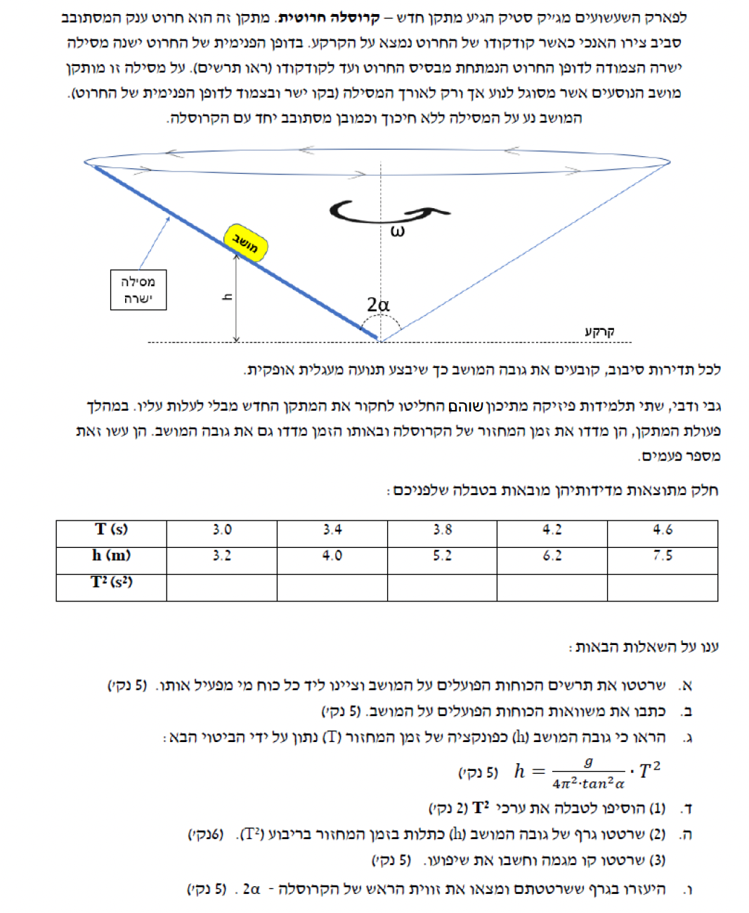

מושב מסוגל לנוע לאורך מסילה על הדופן הפנימית של חרוט חלק (ללא חיכוך). החרוט מסתובב סביב צירו האנכי, והמושב מצוי בתנועה מעגלית אופקית ביחד עם החרוט. זווית קודקוד החרוט היא \( 2\alpha \).
לשרטט תרשים של הכוחות הפועלים על המושב ולציין ליד כל כוח מי מפעיל אותו.
זיהוי כוחות מגע וכוחות שדה. כוח נורמל (\( N \)) פועל תמיד במאונך למשטח המגע, החוצה ממנו. כוח הכבידה (\( F_g = mg \)) פועל תמיד אנכית כלפי מטה אל מרכז כדור הארץ.
הדופן הפנימית של החרוט יוצרת זווית \( \alpha \) עם ציר הסיבוב האנכי. מכיוון שכוח הנורמל מאונך למשטח, הוא ייצור זווית \( \alpha \) עם המישור האופקי (מעל האופק, לכיוון ציר הסיבוב). נשרטט את תרשים הכוחות (FBD) כשהמושב נמצא על הדופן השמאלית (כפי שמופיע באיור בשאלה), ולכן מרכז המעגל נמצא מימינו.
מערכת הצירים שבחרנו: ציר \( x \) אופקי לכיוון מרכז מעגל הסיבוב (ימינה), וציר \( y \) אנכי כלפי מעלה. כוח הנורמל יוצר זווית \( \alpha \) עם ציר ה-\( x \).
את משוואות התנועה של המושב על פי החוק השני של ניוטון בשני הצירים.
נשתמש בחוק השני של ניוטון: \( \sum F = ma \). המושב אינו נע לאורך ציר ה-y, ולכן שקול הכוחות בציר זה הוא אפס (\( a_y = 0 \)). בציר האופקי, המושב מבצע תנועה מעגלית קצובה ולכן מאיץ בתאוצה רדיאלית: \( a_R \) שכיוונה אל מרכז המעגל.
נפרק את כוח הנורמל לרכיביו:
הקפי הנורמל האנכי מתאזן עם כוח הכובד: \( N_y = N \sin\alpha \).
הקפי הנורמל האופקי מספק את הכוח הצנטריפטלי: \( N_x = N \cos\alpha \).
נרשום את המשוואות:
משוואות התנועה מסעיף ב'. גובה המושב מעל הקודקוד הוא \( h \).
להראות כי גובה המושב כפונקציה של זמן המחזור \( T \) נתון על ידי הביטוי: \( h = \frac{g}{4\pi^2 \cdot \tan^2\alpha} \cdot T^2 \).
נשתמש בקשר של התאוצה הרדיאלית לזמן המחזור מתנועה מעגלית: \( a_R = \omega^2 R = \left(\frac{2\pi}{T}\right)^2 R = \frac{4\pi^2 R}{T^2} \). בנוסף, מתוך גיאומטריית החרוט, נגדיר את רדיוס הסיבוב \( R \) כפונקציה של הגובה \( h \) והזווית \( \alpha \) (השתמש בטריגונומטריה: \( \tan\alpha = \frac{R}{h} \)).
ראשית, נחלץ את \( a_R \) ממשוואות הדינמיקה. נחלק את משוואת הציר האנכי במשוואת הציר הרדיאלי (או נחלץ את \( N \) מהראשונה ונציב בשנייה):
כעת נתבונן בגיאומטריה של התנועה. רדיוס המעגל האופקי \( R \) יחד עם הגובה \( h \) והציר האנכי יוצרים משולש ישר זווית. הזווית מול הרדיוס היא \( \alpha \) ולכן: \( \tan\alpha = \frac{R}{h} \implies R = h \cdot \tan\alpha \).
נציב את \( R \) בנוסחת התאוצה הרדיאלית כתלות בזמן המחזור:
כעת, נשווה בין שני הביטויים שקיבלנו עבור \( a_R \):
נכפיל ב- \( T^2 \) ונחלק ב- \( 4\pi^2 \tan\alpha \) כדי לבודד את \( h \):
טבלת נתונים המכילה זמני מחזור \( T \) בנפרד (בשניות).
להוסיף לטבלה שורה ובה ערכי \( T^2 \).
חישוב ריבוע של כל נתון: \( T^2 \), ושמירה על יחידות מתאימות (\( s^2 \)).
נבצע העלאה בריבוע של כל ערך בשורת ה-T:
| T (s) | 3.0 | 3.4 | 3.8 | 4.2 | 4.6 |
|---|---|---|---|---|---|
| h (m) | 3.2 | 4.0 | 5.2 | 6.2 | 7.5 |
| T² (s²) | 9.0 | 11.56 | 14.44 | 17.64 | 21.16 |
טבלת הנתונים המעודכנת הכוללת את ערכי \( h \) כפונקציה של \( T^2 \).
(1) לשרטט גרף פיזור של הנתונים.
(2) להעביר קו מגמה ממוצע (מגמת התאמה ישרה) ולחשב את שיפועו.
כדי לחשב את השיפוע (\( S \)), נבחר שתי נקודות נוחות על קו המגמה (ולא מתוך הטבלה) ונשתמש בנוסחה: \( S = \frac{\Delta h}{\Delta T^2} \).
נשרטט את הגרף עם הצירים המתאימים: יצירת פיזור נקודות והעברת קו מגמה ישר העובר דרך ראשית הצירים כנדרש מהמשוואה (חיתוך מתמטי באפס).
נבחר שתי נקודות על קו המגמה כדי לחשב את השיפוע. נבחר את הנקודות \( (10, 3.6) \) ו- \( (20, 7.2) \) (נשים לב שנקודות אלו יושבות בדיוק על הקו המייצג את הממוצע ולאו דווקא על נתוני הטבלה המקוריים).
הקשר התיאורטי מסעיף ג': \( h = \left(\frac{g}{4\pi^2 \cdot \tan^2\alpha}\right) \cdot T^2 \).
השיפוע הניסויי שמצאנו בסעיף ה': \( S = 0.360 \text{ m/s}^2 \). נניח \( g = 10 \text{ m/s}^2 \).
להיעזר בשיפוע הגרף כדי לחשב את הזווית \( 2\alpha \) (זווית הראש של הקרוסלה).
קישור בין השיפוע המתמטי של הגרף (\( y = mx \)) לבין המקדם בביטוי הפיזיקלי. נשווה את שיפוע הגרף למקדם של \( T^2 \) מתוך הנוסחה התיאורטית: \( S = \frac{g}{4\pi^2 \cdot \tan^2\alpha} \).
נשווה את הביטוי של השיפוע לערך שמצאנו ונחלץ את \( \tan^2\alpha \):
נציב את הערך של פאי (\( \pi \approx 3.14159 \)):
נוציא שורש כדי למצוא את \( \tan\alpha \):
נפעיל פונקציה הפוכה (\( \arctan \)) כדי למצוא את הזווית \( \alpha \):
מכיוון שביקשו את זווית הראש של הקרוסלה, נכפיל את הזווית ב-2: